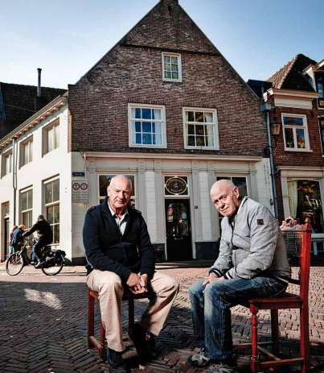

Havik 47
Ontvangst, introductie en de eerste stap door de tijd.
Nieuwe VR-stadsbeleving in Amersfoort
Vier historische locaties. Eén doorlopend verhaal. Zet de VR-bril op waar de geschiedenis werkelijk plaatsvond en ervaar hoe dreiging, verdeeldheid en onzekerheid Amersfoort in hun greep krijgen.
Wat beschermt ons nu?
Amersfoort, 1787
Patriotten en orangisten staan lijnrecht tegenover elkaar. Geruchten over een Pruisische inval verspreiden zich door de straten, en niemand weet meer wie nog te vertrouwen is.
In de VR-beleving spreken historische personages je rechtstreeks aan. Zij nemen je mee in wat het betekent om te leven in een stad die op scherp staat — tussen buren, vrienden en familie die niet langer hetzelfde geloven.
Wat beschermt ons nu?
Zo werkt je tijdreis
In drie stappen neemt Tijdspoort je mee terug naar 1787.
Je wordt ontvangen en meegenomen in het verhaal van Amersfoort in 1787.
Je loopt zelf langs vier markante locaties in de historische binnenstad.
Op elke locatie stap je met VR middenin de gebeurtenissen van 1787.
De vier historische locaties
Verhalen, locaties en virtual reality vormen samen één doorlopende ervaring. Zelfstandig te doorlopen, of begeleid voor schoolklassen en groepen.
Ontvangst, introductie en de eerste stap door de tijd.
Ontdek het dagelijks leven rond de Sint-Joriskerk.
Ervaar de ontploffing van het buskruit in de kapel en de verwoesting die daarop volgt.
Sluit de route af bij een van de iconen van de stad.
Kies je bezoek
Amersfoort 1787 is te beleven door individuele bezoekers, scholen en groepen.
Voor schoolklassen die de geschiedenis van Amersfoort actief willen ervaren.
Neem contact opVoor groepen en bedrijven die samen door de tijd willen reizen.
Neem contact opHistorische en artistieke kwaliteit
We werken samen met historici, culturele organisaties, makers en technologische partners. Zo zorgen we dat de ervaring niet alleen indrukwekkend is, maar ook zorgvuldig, toegankelijk en historisch verantwoord.
Partners en vertrouwen
Het belevingsconcept '1787' brengt de oplopende spanningen tussen patriotten en orangisten en de dreiging van een Pruisische inval tot leven, en laat zien hoe dit doorwerkte in het dagelijks leven van de inwoners. Studio Enversed werkt als artistiek producent aan de VR-belevingsroute; historisch adviseurs Gerard Raven en David de Vries bewaken de historische juistheid van het verhaal, op basis van lokale bronnen en samenwerking met Amersfoortse erfgoedpartners.
Blijf op de hoogte
Ontvang bericht zodra de eerste tickets beschikbaar zijn. Ook voor scholen, groepen, bedrijven en mogelijke partners horen we nu al graag van je interesse of samenwerkingsideeën.
Hoe Tijdspoort ontstond
Stichting Tijdspoort zet zich in voor het onderzoeken, behouden, documenteren en toegankelijk maken van cultureel erfgoed. We combineren historische kennis met digitale technieken om nieuwe generaties op een persoonlijke en betekenisvolle manier met het verleden te verbinden.
Onze eerste beleving richt zich op Amersfoort in 1787. Bezoekers starten aan het Havik en trekken vervolgens langs markante plekken in de historische binnenstad.
De inspiratie voor Stichting Tijdspoort vindt haar oorsprong in Havik 47, waar de familie Van Ramselaar al meer dan 75 jaar antiek en erfgoed bewaart. Waar eerdere generaties voorwerpen en verhalen bewaarden, brengen wij met nieuwe technologie de geschiedenis van Amersfoort opnieuw tot leven.
"Ik ben trots op onze familie en hoe we generaties erfgoed en antiek hebben bewaard, en dit nu levendig kunnen doorgeven aan iedereen." — Henk van Ramselaar
De familie
De oorsprong van Stichting Tijdspoort ligt mede bij de familie Van Ramselaar, die al 75 jaar verbonden is met antiek, erfgoed en de stad Amersfoort.
In 1950 richtte Gerardus van Ramselaar Firma G. van Ramselaar & Zonen op. Zijn zoons Gerard en Henk namen het familiebedrijf over en bouwden het gezamenlijk verder uit. Beiden waren van even groot belang voor het behoud van de zaak, het opgebouwde vakmanschap en de bijzondere collectie. Met hun kennis van antiek, kunst, sieraden en historische voorwerpen hielden zij niet alleen een onderneming in stand, maar ook een tastbare verbinding met het verleden.
De broers waren daarnaast nauw verbonden met het Amersfoortse voetbal. Gerard – binnen de familie bekend als Muus – speelde in lokale elftallen. Henk bouwde een markante loopbaan op in het betaalde voetbal en kwam als onverzettelijke verdediger uit voor HVC, RCH, Blauw-Wit en SC Amersfoort. Hij speelde bij RCH samen met Johan Neeskens en werd later landelijk bekend door de langste schorsing uit de geschiedenis van het Nederlandse profvoetbal. Na zijn voetbalcarrière bleef hij actief als antiquair en beëdigd taxateur.
Het monumentale pand aan Havik 47 vormt de thuisbasis van deze familiegeschiedenis. Het rijksmonument, historisch bekend als Het Verdwaalde Schaap, staat aan de voormalige middeleeuwse haven van Amersfoort. Hier komen de geschiedenis van de stad, het pand en drie generaties Van Ramselaar samen.
Stichting Tijdspoort zet deze traditie op eigentijdse wijze voort. Waar Gerardus, Gerard en Henk historische voorwerpen onderzochten, waardeerden, bewaarden en doorgaven, gebruikt Tijdspoort nieuwe technieken om ook de verhalen erachter toegankelijk te maken. Met virtual reality en historische routes brengen we het verleden van Amersfoort opnieuw tot leven.
De middelen veranderen, maar de kern blijft hetzelfde: waardevol erfgoed zorgvuldig bewaren en beleefbaar doorgeven aan volgende generaties.

Organisatie
Stichting Tijdspoort werkt volgens de Governance Code Cultuur, met een duidelijke scheiding tussen bestuur en uitvoering.
Initiatiefnemer van het project en nazaat van de familie Van Ramselaar. Stuurt de dagelijkse uitvoering, partners en leveranciers aan en bewaakt kwaliteit, planning en budget.
Kleindochter van de oprichter van Havik 47. Ondersteunt de operationele uitvoering en bouwt de vrijwilligersorganisatie op voor na de opening van de route.
Pam Groenestein — voorzitter
Isabel van der Leij — penningmeester
Mourad El Amry — secretaris
We komen graag in contact met erfgoedinstellingen, fondsen, scholen, bedrijven en andere betrokken partners.
Beleidsdocumenten, jaarverslagen en bestuursinformatie worden hier later beschikbaar gemaakt.